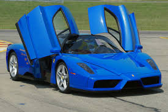
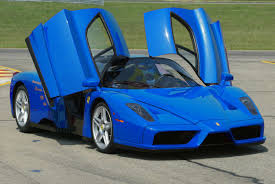

They’re selling automotive parts, accessories, and service online for everything from sportbikes to trucks for both B2C and B2B buyers. Some of these brands are brand new to the space. Others are launching online stores for the very first time. And others still are updating their online storefront channels and launching multi-channel initiatives to increase market share.They can purchase speedway apparel and memorabilia and buy their favorite drivers’ gear. When browsing products, shoppers can zoom in for a closer look and view related products. BB Wheels is a family owned and operated automotive company specializing in wheels, tires, and vehicle accessories. The site’s slick user interface lets shoppers quickly locate products by type. The homepage touts the company’s free shipping, current promotions, financing options, a bolt patterns and fitment guide, daily deals, and Google Customer Reviews—all great methods of engaging customers. Product pages show product specifications, similar products, warranty information, and reviews.

 
